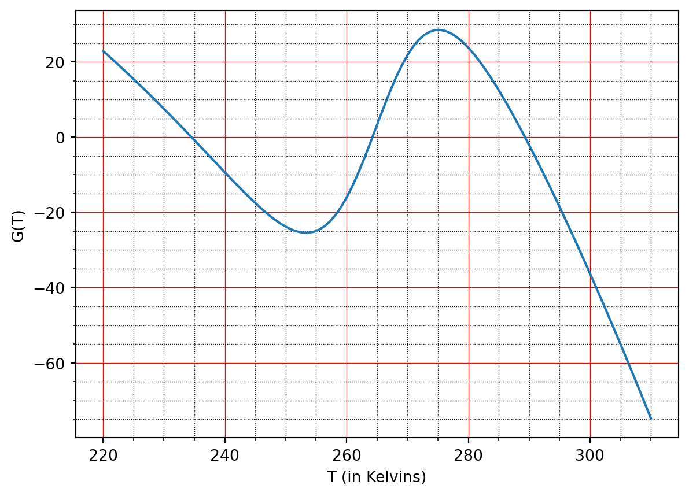

Hand-in by or on lecture 21 (one week, 23 Mar 2023).
This problem set focuses on EBMs.
Q1. Budyko’s model
Previously we derived the energy for outgoing radiation as: \[
E_{\text{out}}(T) = \sigma \gamma T^4,
\] which is estimated via the Stefan-Boltzmann law. Budyko’s approximation replaces this law with a linear relationship.
Assume that \[
T = T_0 + \bar{T},
\] where \(T_0 = 273.15 \, \mathrm{K}\), which corresponds to \(0^\circ \, \mathrm{C}\). We can consider \(\bar{T}\) as measured in Celcius (since conversion between Kelvins and Celcius is directly proportional). Substitute the above into \(E_{\text{out}}\) and linearise, thus assuming \(\bar{T}\) is near zero. Place the energy in the form \[
E_{\text{out}} \sim A + B\bar{T}.
\] Using the standard value of \(\sigma = 5.67 \times 10^{-8}\) W/m2 K4 and \(\gamma = 1\), calculate the values of \(A\) and \(B\).
Rather than use the formal values derived above, the standard Budyko model uses values of \(A = 203.3 \mathrm{W}/\mathrm{m}^2\) and \(B = 2.09 \, \mathrm{W}/(\mathrm{m}^2 {}^\circ \mathrm{C})\) that are found from best fit with observational data.
Using Jupyter and a short script for numerical root finding, investigate the equilibrium solutions of \[
Q(1 - a(T_0 + \bar{T})) = A + B \bar{T}.
\] where \(Q = 342 \, \mathrm{W}/\mathrm{m}^2\) and \(a(T)\) is given from (Equation 15.2). Where are the equilibrium solutions, \(\bar{T^*}\), and how do they compare with those obtained previously using the Stefan-Boltzmann relation?
Q2. Variable Sun output
Satellite data indicates that \(Q\), varies roughly between 341.37 W/m2 and 341.75 W/m2, with a period of about 11 years.
Use the simple EBM (Equation 15.3), given by \[
Q(1 - a) = \sigma \gamma T^4,
\] with a constant albedo, \(a = 0.3\) and greenhouse gas factor \(\gamma = 0.6\) to estimate the resultant variation (max and min) in the Earth’s mean surface temperature \(T\).
Similar to (a) but this time, use the Budyko balance equation, \[
Q(1 - a) = A + BT
\] with \(A = 203.3 \, \mathrm{W} \mathrm{m}^{-2}\) and \(B = 2.09 \, \mathrm{W}/(\mathrm{m}^{2} \, {}^\circ \mathrm{C})\) to estimate the resultant variation in the surface temperature. Use \(a = 0.3\).
The actual variation in surface temperature is in fact less than what you computed above. Why might this be?
Q3. Phase line analysis
Consider the energy balance equation \[
C \frac{\mathrm{d}T}{\mathrm{d}t} = Q(1 - a(T)) - \sigma \gamma T^4 \equiv G(T).
\tag{32.1}\] with \(a\) given by (Equation 15.2). Because the differential equation is autonomous, we can apply phase-line analysis in order to qualitatively understand the evolution. Below is a plot of the function \(G\):
import numpy as npimport matplotlib.pyplot as pltQ =342; sigma =5.67e-8; gam =0.6;a =lambda T: 0.5-0.2*np.tanh(0.1*(T-265));T = np.linspace(220, 310, 100);G = Q*(1-a(T)) - sigma*gam*T**4fig, ax = plt.subplots()ax.plot(T, G)ax.grid(); ax.minorticks_on();# Customize the major gridax.grid(which='major', linestyle='-', linewidth='0.5', color='red')# Customize the minor gridax.grid(which='minor', linestyle=':', linewidth='0.5', color='black')plt.xlabel('T (in Kelvins)'); plt.ylabel('G(T)');

Sketch the solution \(T(t)\) of this equation for \(t > 0\) if \(T(0) = 230, 240, 260, 270\) and \(300\).
Sketch the solution \(T(t)\) of this equation for \(t > 0\) if \(T(0) = 285\). Then sketch the solution of this equation with the same initial data in the same coordinate system if \(C\) is twice as large. Explain your answer.
If \(\gamma\) is decreased due to the increased greenhouse effect, the entire curve is shifted upwards. Sketch the solution if \(T(0) = 280\). Sketch the solution with the same initial data if \(\gamma\) is decreased. Explain your answer.
Q4. Evolution
Consider again (Equation 32.1). Let \(T^*\) be a steady-state solution and set \(T = T^* + u(t)\) where \(u(t)\) is a small perturbation from the steady state.
Show that the perturbation satisfies \[
C \dot{u} = -D u + O(u^2).
\] and hence solve for the general solution of the leading-order perturbation (ignoring quadratic terms). What are the conditions on \(T^*\) so that the steady state is linearly stable?
Assuming \(T^*\) is linearly stable, find the typical response time to a perturbation. For instance, what is the time it takes for the perturbation to reach the value \(u(t) = 0\) if \(u(0) = 1\)? How does this response time change with \(C\)? What is the physical interpretation of this regarding the climate?
Q5. Integral of energy over the planet
Ignoring the effects of albedo, the total radiation absorbed over the surface of the planet (per unit time) is given by \[
\iint_{\text{planet}} Qs(y=\sin\varphi) \, \mathrm{d}S.
\] This is what is known as a surface integral (Section 43.1). In the case of the spherical coordinate system, this is calculated by \[
\int_{\theta=0}^{2\pi} \int_{\varphi = -\pi/2}^{\pi/2} Qs(y = \sin\varphi) R_E^2 \cos\varphi \, \mathrm{d}\varphi \mathrm{d}\theta.
\] Use the properties of \(s(y)\) in (Equation 16.3) to conclude that the total radiation absorbed is \(4\pi R_E^2 Q\).
Q6. Mean temperature in the latitude-dependent EBM
Consider now the latitude-dependent EBM \[
C \frac{\mathrm{\partial}T}{\mathrm{\partial}t} = Qs(y)[1 - a(y)] - (A + BT) + k(\bar{T} - T).
\] Recall the albedo is given by \(a = a_i\) for \(y > y_s\) and \(a = a_w\) for \(y < y_s\).
By integrating the above equation over \(y \in [0, 1]\), show that the mean temperature is given by \[
C \frac{\mathrm{d}\bar{T}}{\mathrm{d}t} = Q(1 - \bar{a}) - (A + B\bar{T}),
\tag{32.2}\] where \[
\bar{a} = \int_0^1 s(y) a(y) \, \mathrm{d}y = \alpha_w \int_0^{y_s} s(y) \, \mathrm{d}y + a_i \int_{y_s}^1 s(y) \, \mathrm{d}y.
\]
In the case that \(s\) is given by (Equation 16.3), show that \[
\bar{a} = a_i + (a_w - a_i) y_s[1 - 0.241(y_s^2 - 1)].
\tag{32.3}\] What is \(\bar{a}\) in the two situations of a completely ice-covered world and an ice-free world?
Using Python, plot a graph of the steady-state temperature, \(T^*\), which satisfies \[
\bar{T}^* = \frac{Q(1 - \bar{a}) - A}{B},
\tag{32.4}\] as a function of the ice line location, \(y_s \in [0, 1]\).
In the numerical code designed in lectures ma30287/notebooks/lecture17-latitudeebm_newton.ipynb we used numerical quadratic to determine \(\bar{T}\). Experiment with a modest number of mesh points and verify how well the integration scheme compares with the exact solution shown above.